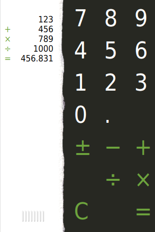

Qt Quick Demo - Calqlatr
A QML app designed for portrait devices that uses custom components, animated with AnimationController, and JavaScript for the application logic.

Calqlatr demonstrates various QML and Qt Quick features, such as displaying custom components and using animation to move the components around in the application view. The application logic is implemented in JavaScript and the appearance is implemented in QML.
Running the Example
To run the example from Qt Creator, open the Welcome mode and select the example from Examples. For more information, visit Building and Running an Example.
Displaying Custom Components
In the Calqlatr application, we use the following custom types that are each defined in a separate .qml file:
- Button.qml
- Display.qml
- NumberPad.qml
To use the custom types, we add an import statement to the main QML file, calqlatr.qml that imports the folder called content where the types are located:
import "content"
We can then display custom components by adding the component types to any QML file. For example, we use the NumberPad type in calqlatr.qml to create the number pad of the calculator. We place the type inside an Item QML type, which is the base type for all visual items in Qt Quick:
Item {
id: pad
width: 180
NumberPad { id: numPad; y: 10; anchors.horizontalCenter: parent.horizontalCenter }
}
Further, we use the Button type in the NumberPad type to create the calculator buttons. Button.qml specifies the basic properties for a button that we can modify for each button instance in NumberPad.qml. For the digit and separator buttons, we additionally specify the text property using the property alias text that we define in Button.qml.
For the operator buttons, we also specify another color (green) using the property alias color and set the operator property to true. We use the operator property in functions that perform the calculations.
We place the buttons inside a Grid QML type to position them in a grid:
Grid {
columns: 3
columnSpacing: 32
rowSpacing: 16
signal buttonPressed
Button { text: "7" }
Button { text: "8" }
Button { text: "9" }
Button { text: "4" }
Button { text: "5" }
Button { text: "6" }
Button { text: "1" }
Button { text: "2" }
Button { text: "3" }
Button { text: "0" }
Button { text: "."; dimmable: true }
Button { text: " " }
Button { text: "卤"; color: "#6da43d"; operator: true; dimmable: true }
Button { text: "鈭; color: "#6da43d"; operator: true; dimmable: true }
Button { text: "+"; color: "#6da43d"; operator: true; dimmable: true }
Button { text: "鈭; color: "#6da43d"; operator: true; dimmable: true }
Button { text: "梅"; color: "#6da43d"; operator: true; dimmable: true }
Button { text: "脳"; color: "#6da43d"; operator: true; dimmable: true }
Button { text: "C"; color: "#6da43d"; operator: true }
Button { text: " "; color: "#6da43d"; operator: true }
Button { text: "="; color: "#6da43d"; operator: true; dimmable: true }
}
Some of the buttons also have a dimmable property set, meaning that they can be visually disabled (dimmed) whenever the calculator engine does not accept input from that button. As an example, the button for square root operator is dimmed for negative values.
Animating Components
We use the Display type to display calculations. In Display.qml, we use images to make the display component look like a slip of paper that contains a grip. Users can drag the grip to move the display from left to right.
When users release the grip, the AnimationController QML type that we define in the calqlatr.qml file finishes running the controlled animation in either a forwards or a backwards direction. To run the animation, we call either completeToEnd() or completeToBeginning(), depending on the direction. We do this in the MouseArea's onReleased signal handler, where controller is the id of our AnimationController:
MouseArea {
...
onReleased: {
if (rewind)
controller.completeToBeginning()
else
controller.completeToEnd()
}
}
Unlike other QML animation types, AnimationController is not driven by internal timers but by explicitly setting its progress property to a value between 0.0 and 1.0.
Inside the AnimationController, we run two NumberAnimation instances in parallel to move the number pad and the display components simultaneously to the opposite sides of the view. In addition, we run a SequentialAnimation instance to scale the number pad during the transition, giving the animation some depth.
AnimationController {
id: controller
animation: ParallelAnimation {
id: anim
NumberAnimation { target: display; property: "x"; duration: 400; from: -16; to: window.width - display.width; easing.type: Easing.InOutQuad }
NumberAnimation { target: pad; property: "x"; duration: 400; from: window.width - pad.width; to: 0; easing.type: Easing.InOutQuad }
SequentialAnimation {
NumberAnimation { target: pad; property: "scale"; duration: 200; from: 1; to: 0.97; easing.type: Easing.InOutQuad }
NumberAnimation { target: pad; property: "scale"; duration: 200; from: 0.97; to: 1; easing.type: Easing.InOutQuad }
}
}
}
We use the easing curve of the type Easing.InOutQuad to accelerate the motion until halfway and then decelerate it.
In Button.qml, the text colors of the number pad buttons are also animated.
Text {
id: textItem
...
color: (dimmable && dimmed) ? Qt.darker(button.color) : button.color
Behavior on color { ColorAnimation { duration: 120; easing.type: Easing.OutElastic} }
states: [
State {
name: "pressed"
when: mouse.pressed && !dimmed
PropertyChanges {
target: textItem
color: Qt.lighter(button.color)
}
}
]
}
We use Qt.darker() to darken the color when the button is dimmed, and Qt.lighter() to light up the button when pressed. The latter is done in a separate state called "pressed", which activates when the pressed property of the button's MouseArea is set.
The color changes are animated by defining a Behavior on the color property.
In order to dynamically change the dimmed property of all the buttons of the NumberPad, we connect its buttonPressed signal to the Button's updateDimmed() function in Button.qml:
function updateDimmed() {
dimmed = window.isButtonDisabled(button.text)
}
Component.onCompleted: {
numPad.buttonPressed.connect(updateDimmed)
updateDimmed()
}
This way, when a button is pressed, all buttons on the NumPad receive a buttonPressed signal and are activated or deactivated according to the state of the calculator engine.
Performing Calculations
The calculator.js file defines our calculator engine. It contains variables to store the calculator state, and functions that are called when the user presses the digit and operator buttons. To use the engine, we import calculator.js in the calqlatr.qml file as CalcEngine:
import "content/calculator.js" as CalcEngine
Importing the engine creates a new instance of it. Therefore, we only do it in the main QML file, calqlatr.qml. The root item defined in this file contains helper functions that allow other types to access the calculator engine:
function operatorPressed(operator) {
CalcEngine.operatorPressed(operator)
numPad.buttonPressed()
}
function digitPressed(digit) {
CalcEngine.digitPressed(digit)
numPad.buttonPressed()
}
function isButtonDisabled(op) {
return CalcEngine.disabled(op)
}
When users press a digit, the text from the digit appears on the display. When they press an operator, the appropriate calculation is performed, and the result can be displayed using the equals (=) operator. The clear (C) operator resets the calculator engine.
List of Files
Files:
- demos/calqlatr/calqlatr.pro
- demos/calqlatr/calqlatr.qml
- demos/calqlatr/calqlatr.qmlproject
- demos/calqlatr/calqlatr.qrc
- demos/calqlatr/content/Button.qml
- demos/calqlatr/content/Display.qml
- demos/calqlatr/content/NumberPad.qml
- demos/calqlatr/content/calculator.js
- demos/calqlatr/main.cpp
Images:
{kind=link}
{kind=link}
{kind=link}
See also QML Applications.